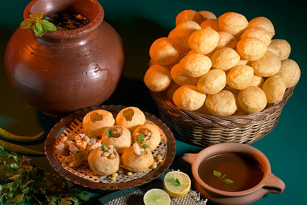

Pani Puri - A Refreshing Indian Street Food

Description
Pani Puri, also known as Golgappa or Puchka, is a popular Indian street food. It consists of crispy hollow puris filled with spicy, tangy, and flavored water, along with a potato and chickpea stuffing.
Ingredients
For the Puris:
- 1 cup semolina (sooji)
- 1/4 cup all-purpose flour
- Water (for kneading)
- Oil (for frying)
For the Pani (Spiced Water):
- 1 cup mint leaves
- 1/2 cup coriander leaves
- 1-inch ginger
- 1 green chili
- 1 tsp roasted cumin powder
- 1 tsp black salt
- 1 tbsp tamarind pulp
- Cold water
For the Filling:
- 3 boiled potatoes (mashed)
- 1/2 cup boiled chickpeas
- 1 tsp chaat masala
- 1/2 tsp black salt
Steps
- Make Puris: Knead a stiff dough with sooji and flour, roll into small discs, and deep fry until crispy.
- Prepare Pani: Blend mint, coriander, ginger, and spices with water. Strain and chill.
- Prepare Filling: Mix mashed potatoes, chickpeas, and chaat masala.
- Assemble: Poke a hole in puris, fill with stuffing, and pour the spiced water.
- Serve: Enjoy fresh!
Home